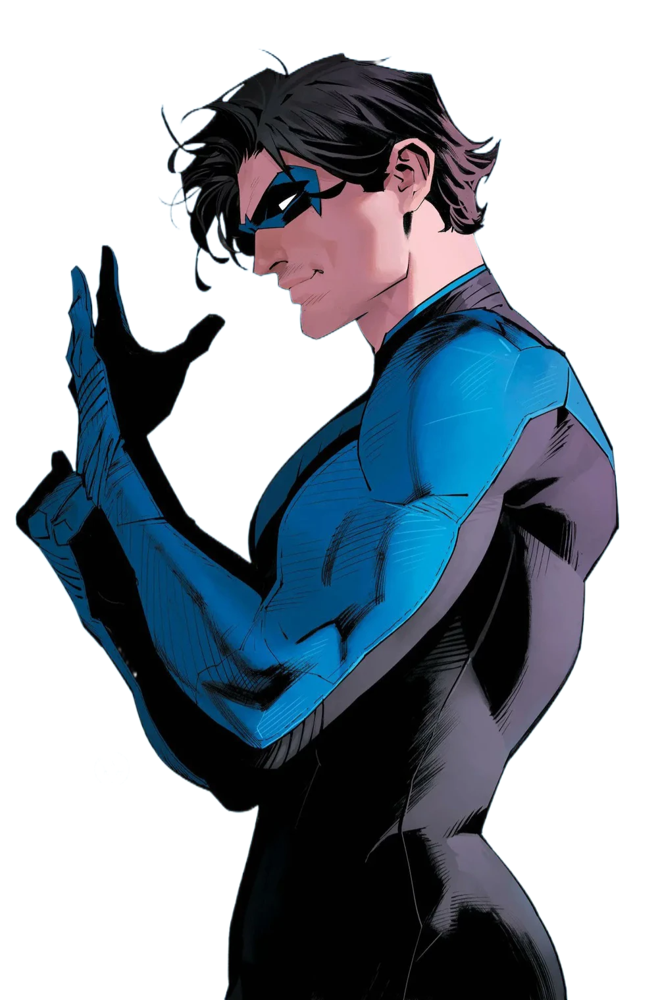
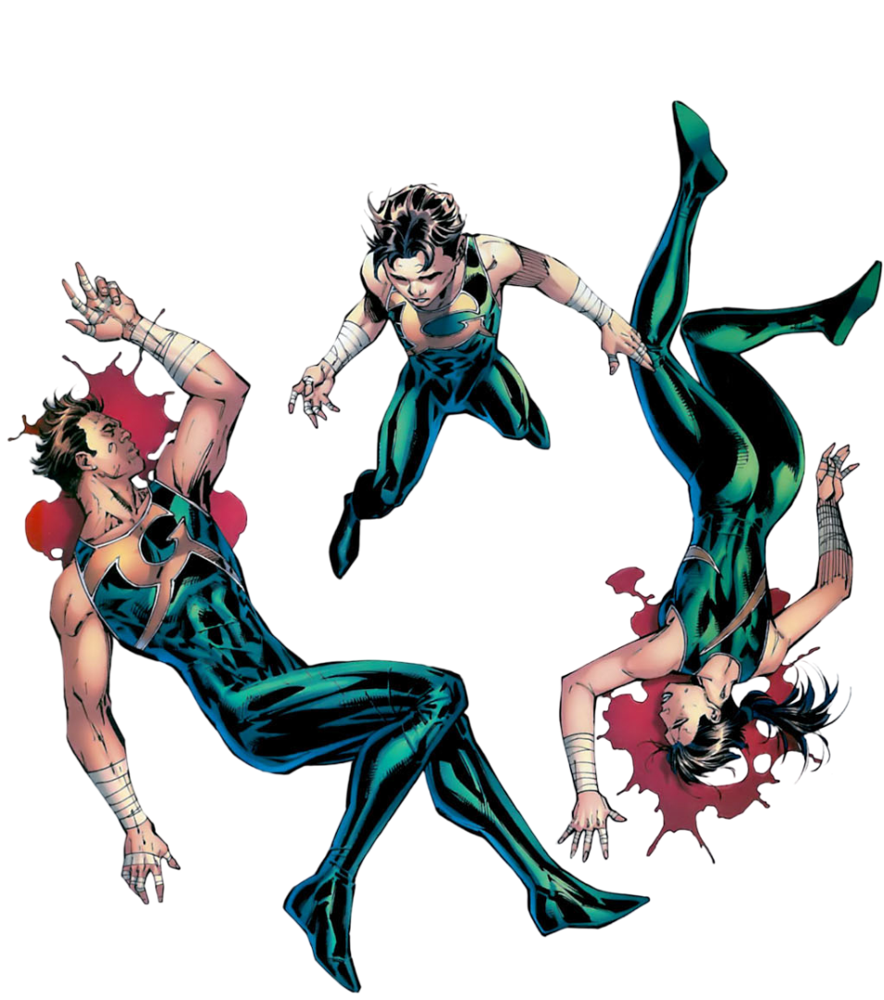
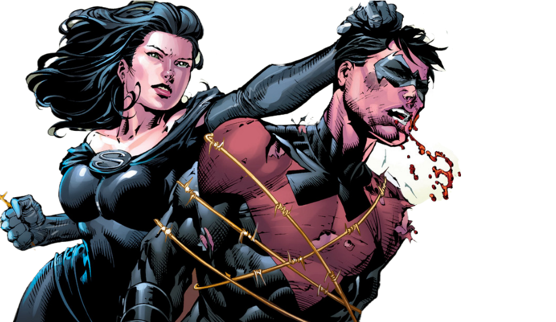

Membro de uma família de acrobatas pertencente ao circo Haley e conhecidos como Graysons Voadores, Richard Grayson (ou Dick, para os mais íntimos), presenciou um dos piores momentos da sua vida ainda criança. O último espetáculo de seus pais foi uma completa tragédia e Dick acabou vendo eles caírem do trapézio para a morte, o que aconteceu na verdade foi um boicote feito a mando de um mafioso chamado Anthony Zucco, para quem o dono do circo devia uma quantia em dinheiro.
Após os acontecimentos, o menino Richard foi mandado para um orfanato mas não ficou muito tempo como interno, já que Bruce Wayne, após ter presenciado e sentido a dor do garoto, resolveu transforma-lo em seu pupilo, como tutor legal. Sentido por seu novo “pai” não dar toda atenção que uma criança precisaria naquele momento, Dick resolve ir investigar o assassinato de seus pais sozinho, mas acaba tropeçando no Batman que também estava investigando o local. Após acordar em um lugar estranho (na Batcaverna), ele descobre que a identidade secreta do morcego é nada menos que seu tutor, e assim lhe é oferecido um espaço ao lado do cruzado encapuzado.
O nome de Robin foi escolhido por Dick, já que era o mesmo nome como sua mãe o chamava desde que nasceu.
Dick Grayson com certeza é o Robin mais amado e também mais conhecido e adaptado fora dos quadrinhos. Utilizando de piadas em meio às lutas e dando um pouco de humor ao seu tutor que se martirizava toda noite, Richard era um excelente pupilo, habilidoso, obediente e evoluía a cada dia. Em meio as aventuras com o morcego, Dick teve um romance com Barbara Gordon (a primeira Batgirl), de quem gosta até hoje.
